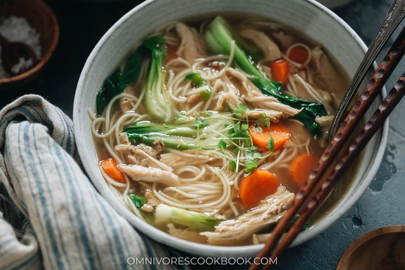

Double Noodle Soup

Description
Simple Noodle Soup of your choosing. The simplest to do on
the list, and probably also the most unhealthy. The double
noodle soup is the perfect dinner if you want to feel like shit
the day after.
Ingredients
- Two Chinese Noodle Soups
- Water
Steps
- Cook 1L of water.
- While the water is heating up, put the two noodle chuns in the middle of your plate.
- Sprinkle the spices and oils on top of the two noodle chuns.
- Once the water is boiling, pour it into the plate, preferably onto the spices and oils to spread them around.
- Ready to serve. Able to eat in 8-10 minutes post finish.